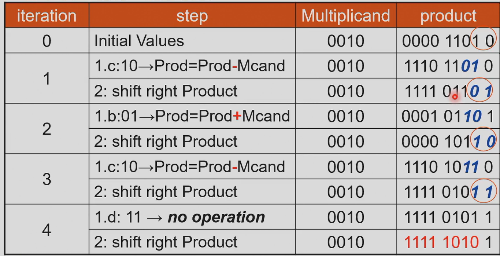

Chap 03 基本算法
阅读信息
约 2296 个字 8 分钟 本页总访问量：加载中... 次
数的表示
word 由计算机的位宽决定
word 是 32 位，doubleword 是 64 位
指令也是用 word 形式表示，即指令是 32bit
有符号数
有符号数的表示：
- sign magnitude：第一位符号位（0 正，1 负），后面绝对值（0 有两个）
- two's complement：2 的补码，第一位\(-2^n\)
为什么一般用补码？符号位表示，则符号位和后面要分开处理，硬件开销大
补码可以直接计算，且只有一个零
- 原码：符号位表示
- 反码：符号位不变，其他位取反
- 补码：反码+1
- 移码：补码的符号位取反（只作用于负数）
溢出
判断 overflow（有符号数）：
- 次高位向高位进位，记为 c2；高位向再上一位进位，记为 c1。如果 c1 和 c2 异或为 1，则有进位。
- 考虑加减法结果加一位。以 8 位为例，看第 9 位和第 8 位，如果两者不同（异或为 1），则溢出。
溢出处理：忽略，报给 OS，程序自己处理
ALU 检测溢出（异常，中断）：把当前指令的地址存在特殊的寄存器，跳到 OS 中处理异常的部分（或其他处理）
OS 中纠正再返回，或带着报错返回程序，或终止程序
ALU
构建 ALU：从一位扩展到多位
单位：与，或，加，减，比较，检测零
全加器：
- \(\text{sum}=A\oplus B\oplus C_{in}\)
- \(C_{out}=BC_{in}+AC_{in}+AB\)
减法：
B 按位取反，cin 一定是 1
parallel redundant select：提前并行计算处出 cin 是 0 和 1 的两种可能结果，再选择。加快速度
slt rd rs rt:set less than,rd 存储结果，对 rs 和 rt 比较。当 rs < rt 时 rd 为 1，否则为 0。先判断是不是同号，因为异号相减会溢出。
most significant bit：最高位（符号位），叫做 set 信号。
扩展：依次计算每一位，进位串联
ALU 输出：是不是 0，计算结果，有没有溢出
Verilog 代码：
always@后面是敏感列表，出现再等式右边或导致结果变化的所有值，都要放在敏感列表中。
中间值存储：redundant select，如果直接将计算式代入 case 中，则可以执行时优化
fast adder:
- carry lookahead adder (CLA)：每个进位的式子展开成输入的表达式。十六位：四个一组，相同表示（两级加法器） 。
- carry select adder (CSA): 将进位是 0 和 1 都计算出来，用 c4 选择结果。
乘法：加法器、寄存器
64bit 相乘，结果可能 128bit
检验乘数的最后一位，如果是 1，结果加被乘数，如果是 0 跳过。被乘数左移一位，乘数右移一位。（太大！）
加法只是 64 位，最低位后面不变。对积移位，每次将积右移。
积用 128 位寄存器存储，初始时的后 64 位没有用到，全部在右移时移走。因为右移和乘数的移动相同，把乘数放在这个位置。
乘法不能用补码计算。绝对值相乘，再判断符号位是不是一样。
Booth 法：（从低位开始） 第一个出现的 1，减；连续出现的 1，移位（符号位不变）；最后出现的 1，加
Booth's Algorithm
Booth 算法是一种对二进制数进行有符号乘法运算的优化方法，主要目的是减少实际需要的加法或减法次数，从而提高运算效率。它适用于二进制补码表示的数。
在普通的乘法器中，逐位扫描乘数的每一位，如果该位为 1，就加上被乘数对应的移位版本，如果该位为 0，就跳过。这种方法在乘数里有很多连续的 1 时，就会产生很多次重复的加法操作。Booth 算法通过对乘数的位模式进行编码，能把一串连续的 1 替换为一次加法和一次减法，从而减少计算次数。
Booth 算法的基本思想是：观察乘数的相邻两位（包括最低位和额外添加的一位 0，记作 Q[-1]）。根据这两位的组合，决定当前步骤是否需要对部分积加上或减去被乘数。规则如下：
- 如果当前位 Q[i] = 0，上一位 Q[i-1] = 0 → 不操作（部分积不变）。
- 如果当前位 Q[i] = 1，上一位 Q[i-1] = 0 → 部分积减去被乘数。
- 如果当前位 Q[i] = 0，上一位 Q[i-1] = 1 → 部分积加上被乘数。
- 如果当前位 Q[i] = 1，上一位 Q[i-1] = 1 → 不操作。
在每一步之后，对整个寄存器（部分积 + 乘数 + Q[-1]）做一次算术右移，这样逐步生成最终结果。
举个例子，用 4 位 Booth 算法计算 (-3) × (5)：
- 被乘数 M = -3，用 4 位补码表示是 1101。
- 乘数 Q = 5，用 4 位补码表示是 0101。
- 初始部分积 A = 0000，扩展为 8 位来计算，Q[-1] = 0。
步骤如下：
- 检查 Q[0]=1, Q[-1]=0 → 部分积 = 部分积 - M。 然后算术右移。
- 检查新 Q[0], Q[-1] → 决定是否加减。 每次操作后再算术右移。
- 重复 4 次（因为是 4 位数）。
最终结果得到 11111111 1011（二进制补码），即十进制的 -15。这个与 -3 × 5 的正确结果一致。
Booth 算法的优势在于，它能快速处理乘数中包含连续 1 的情况。比如普通乘法器在遇到 1111 时会执行 4 次加法，而 Booth 算法只需要 1 次加法和 1 次减法。这样在硬件实现上可以减少部分积累加次数，提高乘法效率。

unroll the loop：计算所有位的乘法结果，以树状的形式两两相加。
RISC-V 中：mul, mulh, mulhu, mulhsu
除法：从高位开始减
将除数从左边开始放，每次减除数，如果结果小于零表示多减了，再把除数加回来。将除数往右移。
优化：除数开始时放在右边，每次被除数左移。
为什么除数（64 位）从 remainder（128 位）的最左边开始匹配，而不是直接对齐？这是通用除法器，不确定除数有几位，不能直接对齐。

一正一负相除：商的符号和被除数相同
指令：div,rem; divu,remu
当除数是 0 时，产生 overflow，要自己处理
除法不能展开，因为不知道什么时候结束
浮点数：
浮点是数据结构，sign（符号），significand（fraction，尾数，归一化），exponent（指数位，乘 2 的几次）
符号位 0 表示正数，1 表示负数
单精度：8 位指数，23 位尾数；
双精度：11 位指数，52 位尾数（尾数越多，精度越高）
存储顺序：符号、指数、尾数
默认尾数的小数点前为 1，节省一个 bit
指数默认加 bias，实际的指数为 exponent - bias，这样 exponent 的存储值始终是正的
单精度的 bias 是 127，双精度的 bias 是 1023
exponent=0 表示非规范化数或 0，所以单精度的范围最小是\(1\times 2^{-126}\)，最小精度是\(2^{-23}\)
exponent=111..., fraction=000...表示无穷
exponent=111..., fraction!=000...表示 nan
普通数的指数不能全 1
浮点计算：对齐（化成指数相同），对应数相加，归一化，rounding（进位），归一化
对齐时小的向大的靠近，因为计算后超过位数需要丢掉几位，这样丢掉的是权值低的位
不同计算机有不同的进位方法

浮点乘法：尾数相乘，指数相加
指数相加时 bias 加了两次，一定要减一个 bias
浮点除法：小数相除，指数相减
指数减完要把 bias 加回去
实际计算中，为了计算准确（对齐右移时有些被丢掉），额外加一些位
guard 位（后面放一位用于保护），round 位（guard 位的下一位），sticky 位（round 位的下一位，指数差很多，丢掉余下的数中，只要非零则 sticky 位为 1，否则为 0）
sticky 位有些地方没有
ulp（units in the last place）：四舍五入，最大的损失是最小精度的一半
carry lookahead
G（Generate，生成）和P（Propagate，传递）是进位先算（carry lookahead）加法器的核心概念。逐位情况：
因此进位公式为：
当把多位分为一组时，定义组信号：
于是组间进位可以写成：
举例，4 位组，a=[1,0,1,1]，b=[0,1,1,0]：
组传递 P = 1·0·1·1 = 0 组生成 G = g3 ∨ (p3 g2) ∨ … = 0 ∨ (1·1) = 1 所以无论输入进位是多少，组的输出进位必然为 1。
直观理解：
在 16 位两级进位先算加法器里，16 位被划分成 4 个小组，每组 4 位。每个小组先计算自己的组生成信号 G 和组传递信号 P（不依赖 c0）。这两个信号可以并行得到，因为它们只依赖本组的输入位，而不依赖外来的进位。
有了各组的 G 和 P，组间进位（c4、c8、c12、c16）可以直接通过逻辑展开式并行算出来，例如：
这些公式都是组合逻辑，可以同时计算，不需要等低位的进位逐级传递。
而组内的进位（c1、c2、c3，或者 c5、c6、c7 等）必须依赖于该组的输入进位。例如 c1 的公式里就包含 c0，c5 的公式里包含 c4。如果不知道本组的入口进位，就无法算组内的逐位进位。因此必须等组间进位先确定下来，才能往下展开计算。
所以顺序是：先并行产生组间进位 c4、c8、c12、c16，然后再用这些结果去算每个组内部的 c1、c2、c3 等。这样既保证了速度，又减少了关键路径延迟。